H3 Magic, step 0: choosing 10,000 Pexels clips
Dataset page of the Pexels adapter.
We train adapters on the MiniMax H3 text-to-video model. This data trains the Pexels adapter: a LoRA on stock H3 (no earlier adapter). It makes H3 generate Pexels-like video. The adapter needs real stock video with clear motion in the first 6 seconds. We chose the clips with BirdsEye metrics, then checked samples by eye. Back to the journal.
Real means camera footage, not a render or an animation. Decent motion means that something visibly moves in the first 6 seconds. Below: examples first, numbers after.
Accepted: real clips with decent or high motion (24 of the 165 that passed)
Each strip is a contact sheet: 6 frames from 0 to 5 s of the clip, shown at full resolution and unchanged. Verdicts come from Sonnet agents that looked at the sheet. flow_mean is BirdsEye's RAFT optical-flow mean over the whole video. birdseye_score is 0 (least motion) to 1 (most).
In a close-up, static shot, a pair of male hands with fair skin are meticulously rolling a joint. Agent note: hand motion.
The video presents a stunning aerial wide shot of the Bosphorus Strait in Istanbul on a bright, sunny day, capturing the serene interplay of iconic architecture and natural beauty. Agent note: aerial move toward mosque.
This aerial, high-angle shot captures a serene beach scene, likely in the early morning or late afternoon, under soft, natural light with a bright, hazy sky. Agent note: waves and aerial move.
An aerial wide shot captures a vibrant blue ocean teeming with numerous surfers under a partly cloudy sky. Agent note: drone over surfer on wave.
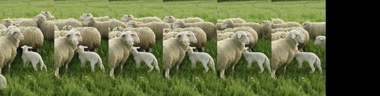
The video features a peaceful pastoral scene with a flock of nine sheep, including adults and lambs, grazing in a vibrant green field with yellow flowers. Agent note: sheep walking, handheld.
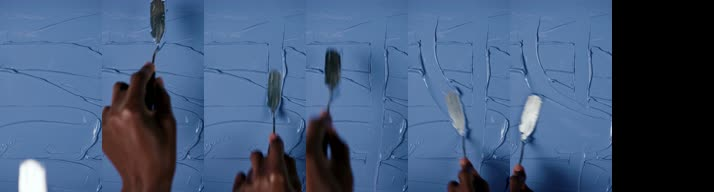
The video features a close-up of a textured blue wall with a tactile, impasto surface, highlighted by the interplay of light and shadow. Agent note: palette knife on blue paint.
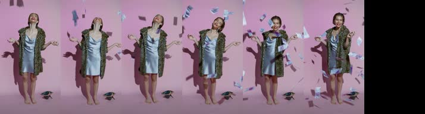
A woman with a playful expression and a leopard print coat over a silver dress stands against a pink backdrop, tossing banknotes into the air. Agent note: woman with falling money.
The video opens with a beautiful wide shot of a multi-bridge cityscape at sunset, captured from the perspective of a moving vehicle. Agent note: sunset bridge from moving car.
The video presents a static, low-angle wide shot of a sun-drenched outdoor plaza, possibly on a college campus or in a commercial center, featuring light reddish-brown concrete paving. Agent note: courtyard, camera moving past benches.
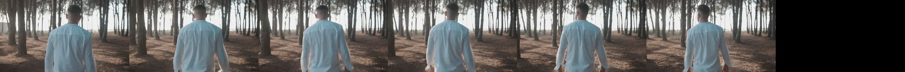
The video features a medium shot from behind of a man standing amidst a tranquil forest of tall, slender trees. Agent note: tracking shot from behind.
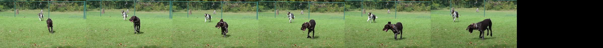
The video features a static, eye-level wide shot of two dogs playing in a brightly lit, expansive green grassy area, likely a dog park, which is enclosed by a green chain-link fence with lush trees visible in the background. Agent note: dog running.
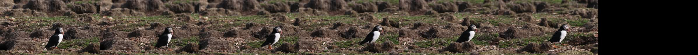
The video opens with a medium shot of a single Atlantic Puffin, its black back and white belly prominent, standing on a rocky, grassy slope. Agent note: bird walks, camera follows.
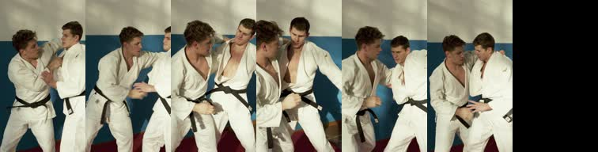
Two men in white judogi with black belts are seen practicing judo in a dojo, starting with one applying a controlled arm throw to his partner against a blue and white striped wall. Agent note: judo sparring.
In a captivating medium-close-up shot, a person with dark skin is elegantly adorned in a voluminous, layered gown of delicate white and soft pink tulle, its ruffled sleeves subtly highlighted. Agent note: hands move.
The video features a cheerful young woman with curly brown hair and olive skin, wearing a vibrant green sleeveless dress, as she smiles warmly and subtly sways to music, looking slightly off-camera to her right. Agent note: camera and subject move.
The video captures a high-angle view of three young people performing an acrobatic cheerleading stunt on a polished wooden gymnasium floor, marked with red and blue boundary lines, under the bright natural light filtering through ... Agent note: overhead gym cheerleading lift.
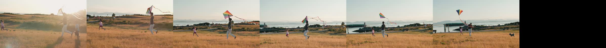
The video captures a joyous outdoor scene in a sun-drenched, dry golden field during what appears to be late afternoon or golden hour, evidenced by the warm light, prominent lens flare, and long shadows stretching across the ... Agent note: family flying kite, tracking.
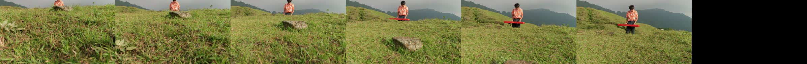
The video begins with a low-angle shot, focusing intently on lush, vibrant green grass that fills the foreground, while a weathered, moss-covered rock sits prominently in the mid-ground. Agent note: camera moves, person walks.
The video showcases a captivating and ethereal underwater ballet, featuring a multitude of translucent jellyfish gracefully pulsating and drifting against a deep, dark blue background. Agent note: aquarium jellyfish, blue light.
The video begins with a static medium close-up shot focused on the torso and arms of an elderly person, their arms crossed over their chest. Agent note: person in coat moving.
A serene wide shot captures a vast expanse of a clear, cool blue sky, tinted with subtle violet and lavender hues, suggesting either early morning or late afternoon light. Agent note: clouds drift.
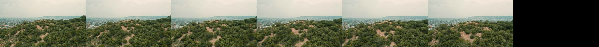
The video captures a serene, static high-angle wide shot, offering a panoramic view from a verdant hillside overlooking a sprawling city under an overcast sky. Agent note: drone forward.
A young girl with blonde hair, wearing a white t-shirt and turquoise leggings, sits on a dark brown couch, engaging in a stretching exercise with an older woman in a black sports bra and gray leggings. Agent note: woman yoga with toddler.
In a static, eye-level medium close-up shot, a young woman with a warm complexion, expressive dark eyes, and a mass of dark, curly hair frames the scene. Agent note: woman painting flower.
Rejected for low motion (12 real clips that barely move)
These are real footage. The first 6 seconds have only small motion (a slow push-in, a small shift) or almost none. This is the kind of clip the cutter drops.
A static, eye-level wide shot captures a fluffy, light brown Pomeranian dog sitting patiently inside a stylish brown pet carrier bag. Agent note: dog in bag, pops up once.
A young woman with dark, clear skin and a striking black wide-brimmed hat, featuring a subtle braided band, is captured in a static medium close-up, presented in profile against a soft, light gray background that subtly brightens ... Agent note: studio portrait, hat, small hand motion.
This high-angle, static aerial shot presents a serene yet industrial panoramic view of a wide waterway spanned by a striking red suspension bridge under a clear, bright blue sky. Agent note: slow drone drift.
In a warm, well-lit interior, possibly a study or a cozy room with wooden walls, a multi-ethnic family is gathered around a wooden table, engaged in a learning activity. Agent note: small hand motion.
The video features a static, elevated wide shot capturing a small, distinctive conical island with a prominent, rocky peak and a base adorned with lush green vegetation. Agent note: island aerial, slow drift.
A woman with a contemplative expression and a light grey hijab is seen embracing a man from behind, her hand resting on his shoulder. Agent note: hijab woman portrait.
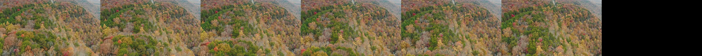
An expansive aerial view, likely captured by a drone, slowly and smoothly pans across a vast, dense forest covering a gently sloping mountainside during autumn. Agent note: slow drone drift.
In a brightly lit and serene indoor garden, an Asian woman with long dark hair, dressed in a flowing white shirt, leans intently over a large, smooth grey concrete tub filled with clear water and numerous lily pads. Agent note: woman touching pond water.
In a wide, static aerial shot, a serene and expansive body of water, likely a sea or a large lake, stretches across the frame under a bright, overcast sky. Agent note: tiny boat motion.
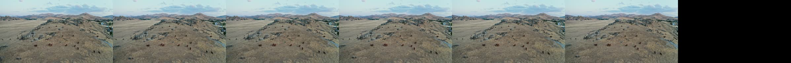
An aerial, high-angle wide shot captures a vast, arid landscape bathed in the soft, warm light of either dawn or dusk. Agent note: aerial hillside cows.
A high-angle, wide static shot captures the unique Wat Samphran Temple, often referred to as the Dragon Temple, standing majestically amidst a dense canopy of lush green tropical foliage and palm trees under a softly diffused, ... Agent note: dragon tower over trees, near static.
The video offers a tranquil, sun-drenched glimpse into a bustling marina on a clear day, captured through a static, eye-level medium shot. Agent note: marina boats, near-still.
Flagged not real (6 of 306 audited)
All clips the agents flagged as synthetic. By eye: two are CGI renders, two look like real studio footage (coils on white, a stop-motion balloon with real objects), two are a motion-graphics composite and a render. The keyword filter had already removed most synthetic clips before this audit.
A static, close-up shot, framed from a slightly elevated, over-the-shoulder angle, focuses intently on a dark-skinned hand meticulously holding a fine paintbrush. Agent note: hand painting letter over photo collage overlay.
The video presents a static, bright, and evenly lit overhead shot of a clean white surface, likely a studio backdrop or table, with cool-toned lighting. Agent note: coils on white; looks simulated, doubt.
The video features a static eye-level shot that slowly zooms out, beginning with a medium close-up on a glossy black sign displaying \"BLACK FRIDAY\" in bold white capital letters, positioned on a pristine, highly reflective ... Agent note: Black Friday gift box render.
The video opens with a static, bright overhead shot showcasing a solid, vibrant yellow background. Agent note: balloon letters appear; stop-motion/synthetic look.
The video presents a meticulously arranged still life against a dark, minimalist background, featuring a gradually evolving composition of geometric shapes and natural elements. Agent note: CGI rings and blocks.
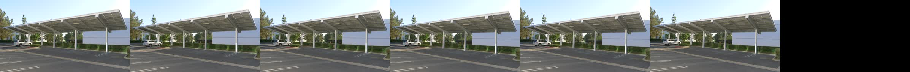
A static wide shot captures a modern, elongated solar carport structure situated in a bright outdoor parking lot on a clear day. Agent note: solar carport render.
The filter funnel
| # | Step | Clips |
|---|---|---|
| 1 | All Pexels videos in BirdsEye | 81,766 |
| 2 | Duration >= 6.5 s, short side >= 512 px, caption > 20 characters | 75,818 |
| 3 | Synthetic-looking caption keywords removed | 65,578 |
| 4 | flow_mean_magnitude >= 1.5 and promo / stop-motion keywords removed | 36,847 |
| 5 | Randomly drawn and ffprobe-checked: train + val + spare | 21,523 |
| 6 | Of these: train 10,000 + val 20 (the rest, 11,503, is spare) | 10,020 |
Sources: h3magic/data/PEXELS_SELECTION.md; seed 20261122 for the first draw and 20261123 for the 10,000 extra spare clips. The final 10,000 are not fixed yet: see "What happens next".
Which BirdsEye metric predicts real motion?
We audited 306 clips: 165 had decent or high motion in the first 6 seconds, 6 were not real. For each BirdsEye metric we computed the AUC for "moving" (decent or high). AUC 0.5 is chance. 1.0 is perfect. Click a header to sort.
| Metric | Audited clips | AUC moving | Spearman with motion level | AUC real | Videos with the field (of 81,764) |
|---|---|---|---|---|---|
phash_max_change | 306 | 0.740 | 0.49 | 0.44 | 81,764 |
phash_std_change | 306 | 0.738 | 0.48 | 0.42 | 81,764 |
phash_mean_change | 306 | 0.731 | 0.47 | 0.50 | 81,764 |
phash_temporal_std | 306 | 0.724 | 0.45 | 0.47 | 81,764 |
clip_std | 306 | 0.708 | 0.41 | 0.38 | 81,764 |
gve_std | 139 | 0.659 | 0.30 | – | 37,126 |
flow_std_magnitude | 306 | 0.617 | 0.29 | 0.39 | 81,764 |
flow_temporal_std | 306 | 0.616 | 0.29 | 0.50 | 81,764 |
flow_max_magnitude | 306 | 0.609 | 0.27 | 0.42 | 81,764 |
flow_mean_magnitude | 306 | 0.585 | 0.22 | 0.47 | 81,764 |
flow_min_magnitude | 306 | 0.570 | 0.18 | 0.59 | 81,764 |
height | 306 | 0.526 | 0.05 | 0.63 | 81,764 |
bits_per_pixel_second | 306 | 0.493 | 0.02 | 0.78 | 81,764 |
file_size_bytes | 306 | 0.480 | -0.01 | 0.66 | 81,764 |
fps | 306 | 0.478 | -0.03 | 0.46 | 81,764 |
duration | 306 | 0.476 | -0.03 | 0.51 | 81,764 |
num_frames | 306 | 0.466 | -0.05 | 0.51 | 81,764 |
width | 306 | 0.455 | -0.06 | 0.52 | 81,764 |
dwpose_first_human_frame | 18 | – | – | – | 5,123 |
dwpose_last_human_frame | 18 | – | – | – | 5,123 |
dwpose_max_people | 18 | – | – | – | 5,123 |
nb_pro3_2k_4x4_span8_filter_max_jump | 0 | – | – | – | 491 |
nb_pro3_2k_4x4_span8_filter_pass | 0 | – | – | – | 491 |
nb_pro3_2k_4x4_span8_filter_pf_cv | 0 | – | – | – | 491 |
nb_pro3_2k_4x4_span8_filter_pf_max_diff | 0 | – | – | – | 491 |
nb_pro3_2k_4x4_span8_filter_pf_mean_diff | 0 | – | – | – | 491 |
nb_pro3_2k_4x4_span8_filter_pf_phash_max | 0 | – | – | – | 491 |
nb_pro3_2k_4x4_span8_filter_phash_ratio | 0 | – | – | – | 491 |
nb_pro3_2k_4x4_span8_grid_cols | 0 | – | – | – | 491 |
nb_pro3_2k_4x4_span8_grid_rows | 0 | – | – | – | 491 |
nb_pro3_2k_4x4_span8_num_source_frames | 0 | – | – | – | 491 |
nb_pro3_2k_4x4_span8_output_height | 0 | – | – | – | 491 |
nb_pro3_2k_4x4_span8_output_width | 0 | – | – | – | 491 |
siglip_std | 2 | – | – | – | 800 |
- The perceptual-hash change metrics and
clip_stdpredict first-6-s motion better than the RAFT flow we filtered on (about 0.74 versus 0.59). - No metric predicts "real". There are only 6 negatives, too few to filter on.
- birdseye_score is the mean percentile rank (over all 81,764 videos) of phash_std_change, phash_max_change and clip_std. Its AUC for "moving" is 0.758. This is measured on the same 306 clips that we used to choose these three metrics, so it is optimistic.
- Among the audited clips, the top half by birdseye_score is 73% moving. The bottom half is 35%.
- Synthetic rate in the audit: 6 of 306 (2.0%).
What happens next
Whole-video flow does not predict the first 6 seconds well. So the clip cutter measures motion on its own 512×512 clip of the first 5.875 s. It then keeps the 10,000 most-moving clips. It ranks them by the average of its own motion rank and birdseye_score. It draws from the 10,000 train clips plus the 11,503 spare clips. The 20 validation clips are set aside.
Adapter lineage
Final weights: W = W_H3 + a·Δ_pexels + b·Δ_imagegen + c·Δ_graymagic. Each adapter is a LoRA trained on the model with all earlier adapters baked in.
- Stock H3: no adapter.
- Pexels adapter (Δ_pexels): LoRA on stock H3. Trained on this dataset: 10,000 real Pexels clips, first 5.875 s, 512×512, with H3-style captions.
- Image-gen adapter: LoRA on H3 + Δ_pexels, trained on 7 frames per clip of the same clips.
- Gray magic adapter: LoRA on H3 + Δ_pexels + Δ_imagegen, trained on MAGICK images on 50% gray.
Glossary
- AUC
- Area under the ROC curve. The chance that a random moving clip scores higher than a random non-moving clip. 0.5 is chance, 1.0 is perfect.
- phash
- Perceptual hash. A short fingerprint of a frame. phash_*_change metrics measure how much the fingerprint changes between frames, so they measure how much the picture changes.
- clip_std
- Standard deviation over time of CLIP image embeddings of the frames. Large means the content changes.
- flow_mean_magnitude
- Mean optical-flow length (RAFT, pixels at 256 px) over 25 frames of the whole video. A measure of motion, but of the whole video, not the first 6 seconds.
- contact sheet
- One image that shows 6 frames of a clip side by side, at 0 to 5 s. The agents judged clips from these.
- spare
- A real, checked clip that is not in train or val. The cutter uses spares to replace clips that move too little.
- validation (val)
- 20 clips used only to measure validation loss. Never trained on.
- birdseye_score
- See the metric section. 0 is least motion, 1 is most.
Sources: BirdsEye pexels fields, the audit in agents/.scratchpad/pexelspick/ (not in git), manifest section 22.